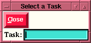
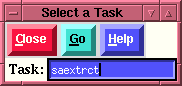
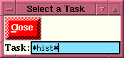
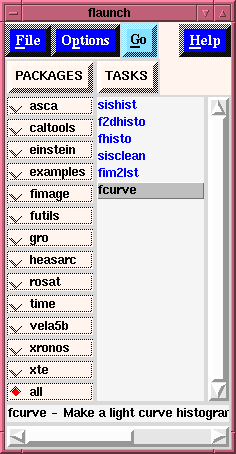
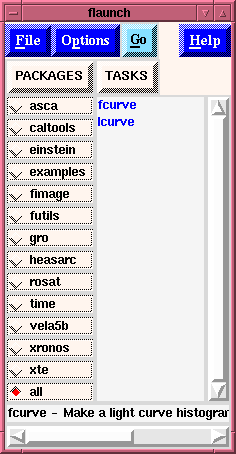

Task Selection window
Task Selection window

This Task Selection entry box has two main functions:
- If a task is entered without any special character
(e.g., *, or ?) then a match is attempted on the taskname
which was entered.
- If a perfect match between
the entered string, and a taskname for an FTOOL is
found, then the code will
attempt to launch this task as explained below.
- If no perfect match is found between the input string
and the known tasks, then the code will
attempt to execute the command in a system shell, under
the assumption that the user is attempting to execute a
command which exists in the user's path which is NOT an
FTOOL, e.g. "ls". Note that all output from the
executed command will go to an
"Output
Log" (which can be viewed) and the name of the
executed command will be entered into the
"Executed tasks"
window just as it would for a valid FTOOL. If the user
wishes to view the output from a command all
that is necessary is to select it from the executed
tasks list displayed in the "Executed tasks"
window. All output from the command will appear
in the displayed "Output Log".
- If special characters are used
in the entered string,
i.e., * for a wild card to match
any character or number of characters, or
? to match any one character, then a
global search is activated which searches all known FTOOLS
as well as their one-line descriptions for matches to the
input pattern. If any matches are found, than all matches
are displayed in the "flaunch" window's listbox which
display's "TASKS". This allows the user to then examine each
tool to find the one that best suits his need. Thus if the
user were to input
If the name given matchs a known ftools
task, e.g.:

- What happens next depends upon which Ftool was
entered. If the
Ftools is truly an Ftool, i.e., one with an independent
parameter file (like saextrct), then a
Parameter Editing Window
is displayed for the task entered. However, if the
Ftools entered is
actually a Perl script (like chantrans), or a Tcl script (like
fv) then an Interactive Window
is spawned in which the command
is run. This allows the user to interact with the command
which was spawned. Actually, ANY command can be executed this
way.
If wildcards are used,
e.g.:

- Then the code performs a global search upon the input
string, in the example the user entered "*hist*" which means
that they want
to see all tools in which the pattern "hist" appears in their
name, or in their one-line description which is available.
- Once this search is performed, the results are displayed
in the original "flaunch" window
so that the user can now (by using the mouse) examine each
tool for the desired behavior.

- We see that the first three tools listed, i.e.,
sishist, f2dhisto, and fhisto, contain the desired pattern
"hist" in their name.
- The remaining three tools listed (sisclean, fim2lst, and
fcurve) have the desired pattern in their one-line
description. (We can see this from the one-line description
given for the selected tool, fcurve, at the bottom of the
display window.
If single character wildcards are
used, e.g.:
- Then the code performs a global search upon the input
string, in the example the user entered "?curve" which means
that they want
to see all tools in which the pattern "_curve" appears in their
name, or in their one-line description which is
available. That is to say that any word having 6
characters in which the last 5 are "curve" would match
this input.
- Once this search is performed, the results are displayed
in the original "flaunch" window
so that the user can now (by using the mouse to select
each tool - only a single click of Button-1) examine each
tool for the desired behavior. Once a tool is selected it
can be "launched" either via a double click of Button-1 on
the desired item, or selecting the "Go" button to "launch"
the "high-lighted" tool.

- We see that there are only two matches to this
pattern, lcurve and fcurve, both ftools.
- There are no other tools in which the pattern
"_curve" appears in their one-line help.
INDEX
Brian
K. Elza
Last modified: Mon Jul 28 14:49:20 EDT